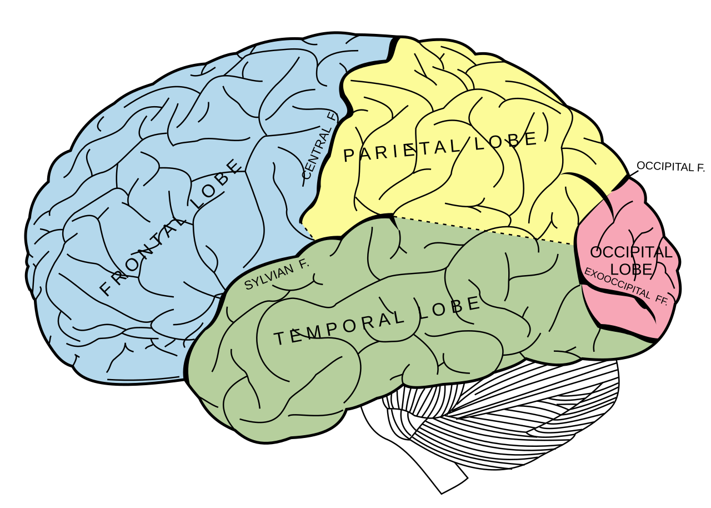
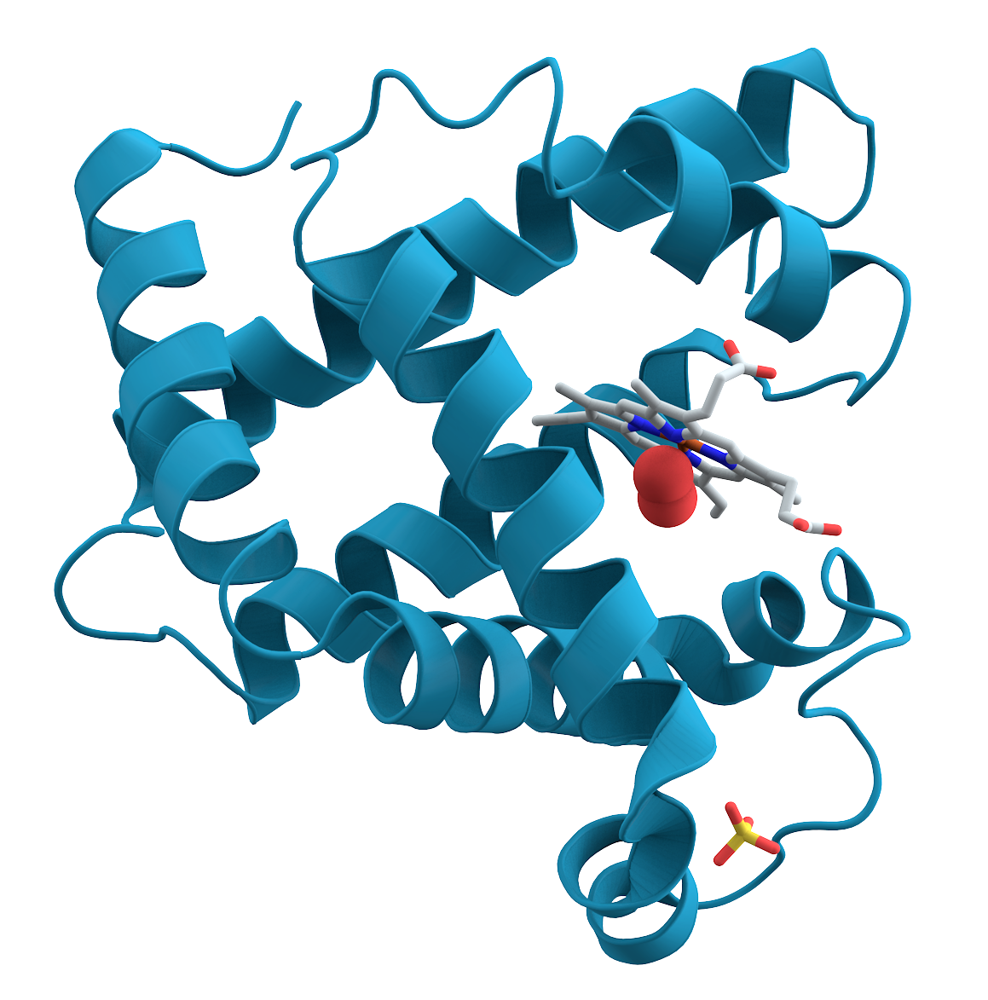
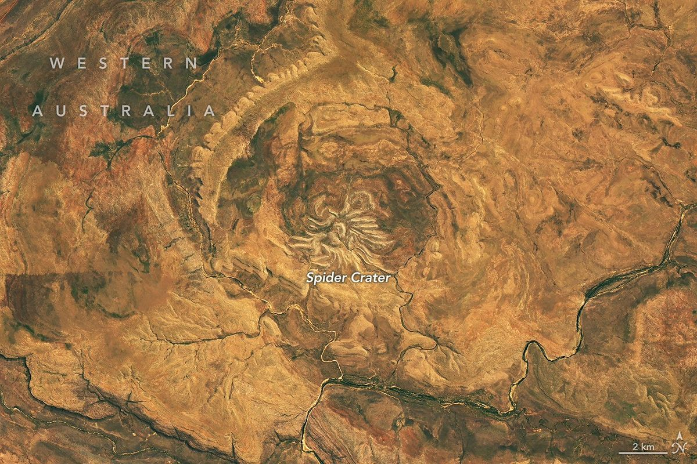
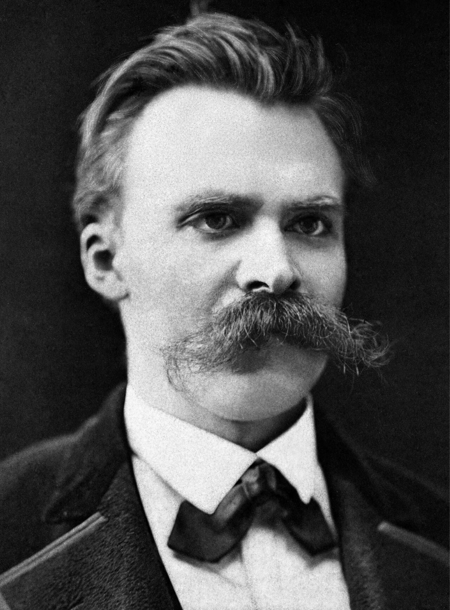

Агенты-исследователи, карта ощущений в мозге, бактерии-электрики, котята ирбиса в Саянах, кратер на паучьих лапах и полезное забвение по Ницше.

Доли большого полушария, вид сбоку. Островок, о котором речь в материале ниже, спрятан в глубине латеральной борозды — снаружи его не видно.Иллюстрация из «Анатомии Грея» (1918), Henry Vandyke Carter. Public domain, Wikimedia Commons.
Главное · ИИ и наука
Тысяча агентов разобрали мозг мыши за 32 минуты
OpenAI вместе с PerturbAI и Scripps Research 21 октября описали эксперимент, который они называют «распределённым биологическим рассуждением». Тысячи агентов на модели GPT‑Rosalind взяли уже опубликованный CRISPR‑атлас мозга мыши — данные о том, как отключение отдельных генов меняет разные типы клеток, — и поделили его между собой: один агент, одно генное возмущение.
Каждый агент анализировал клеточный ответ, искал литературу и предлагал механизм. Отчёты свели в «атлас рассуждений»: гены, эффекты, публикации, гипотезы. Весь прогон занял 32 минуты; ручную работу того же объёма команда оценивает в срок от нескольких месяцев до года.
Агенты воспроизвели выводы, ранее полученные людьми, и добавили новые зацепки.
Их оценки новизны и ценности гипотез, по словам авторов, совпали с суждениями экспертов, работавших вслепую.
Среди находок — различия в действии двух генов, связанных с болезнями, и возможная связь регуляции холестерина с нейродегенерацией.
Важно читать это правильно: это генератор гипотез, а не открытие лекарства. Пока ни одна из зацепок не подтверждена в лаборатории, и сами авторы говорят о «приоритизации экспериментов». Но сдвиг масштаба настоящий: узким местом науки давно стали не данные, а люди, которым некогда их дочитать.
Источник: OpenAI, 21.10.2026. Это объявление компании; рецензируемой статьи на момент выпуска мы не нашли.
Большой материал · Мозг и тело
Островок, который не только слушает тело, но и сочиняет ему сюжет
Insula, или островок, — один из самых труднодоступных участков коры: он лежит в глубине мозга, под складками. Поэтому большинство знаний о нём получено томографией, то есть наблюдением со стороны. Команда Йозефа Парвизи из Стэнфорда пошла другим путём. Больше десяти лет исследователи работали с 87 пациентами, которым электроды вживили по медицинским показаниям, и аккуратно стимулировали разные точки островка, записывая, что человек чувствует. Результат опубликован в Nature 21 октября.
Картина получилась на удивление упорядоченной. Стимуляция задней части вызывала боль, тепло, покалывание и онемение в конкретных местах — руке, ноге. Средняя часть отвечала за «внутренние» ощущения: тошноту, давление, чувство наполненности в груди. А передняя часть оказалась связана с областями, отвечающими за мышление и эмоции, — то есть влияет не только на ощущение, но и на то, как мозг его толкует.
Парвизи формулирует это так: островок «не просто считывает тело — он отчасти влияет на историю о том, как тело следует чувствовать». Нейробиолог Люсина Аддин из UCLA, не участвовавшая в работе, назвала исследование «настоящим подвигом» и одним из самых полных по теме.
Для тех, кто читал Уоттса, это почти сюжет «Ложной слепоты» в мирной версии: ощущение — уже интерпретация. И хорошая новость для медицины: если у боли есть «редактор», с ним, возможно, удастся договориться.
Источники: Nature News, 21.10.2026; статья: Quabs J. et al., Nature (2026).
Статья дня с arXiv
Больше памяти — хуже агент
Руохан Ван, Кишан Панаганти и Дунжуо Чжоу (Indiana University, Tencent), препринт arXiv:2610.27406 от 19 октября. Агенты на LLM любят учиться на своём опыте: записывают в память не только сырые прогоны, но и выведенные из них «правила». Авторы показывают, что ошибочное правило не просто живёт в памяти — оно влияет на новые прогоны, из которых потом выводится новое правило с той же ошибкой. Этот цикл они называют error reproduction.
Рецепт — Anti‑Persistence: хранить только траектории и результаты, а подсказку на конкретную задачу синтезировать заново и выбрасывать после выполнения. Как именно её строить (не строить вовсе, подражать успехам, выводить стратегию или анализировать провалы), выбирает контекстный бандит. На ALFWorld, WebShop и ScienceWorld с тремя открытыми моделями (Llama‑4‑Scout, Qwen3‑Coder‑Next, Gemma‑4‑31B) средний успех — 59,9% против 53,5% у памяти на траекториях и 49,0% у памяти на абстракциях, при минимальном среднем числе вызовов LLM.
Практический вывод для тех, кто делает агентов с «заметками о себе»: храните факты, а мудрость пересобирайте на месте. Оговорка: три текстовых бенчмарка, и авторы сами называют свою статистику разведочной.
Цифра дня
100 аттосекунд
Столько длились самые короткие жёсткие рентгеновские импульсы, когда‑либо полученные на рентгеновском лазере на свободных электронах: от 100 до 400 аттосекунд (аттосекунда — миллиардная доля миллиардной доли секунды) при энергии фотонов около 9 кэВ. Рекорд поставили на установке LCLS в SLAC; прямо измерить такой импульс невозможно, поэтому команда разработала косвенный метод оценки длительности. Зачем: такие вспышки одновременно достаточно «жёсткие», чтобы заглянуть во внутренние оболочки атомов, и достаточно быстрые, чтобы «заморозить» движение электронов — в том числе в плотной плазме. Работа опубликована в Nature Photonics.
SLAC, 20.10.2026

Миоглобин — первый белок, чья пространственная структура была расшифрована (1958). Иллюстрация, не относится к RFD4‑Proteina.AzaToth, Wikimedia Commons, public domain.
Наука · Белки
RFD4‑Proteina: дизайн белков с «режимом размышления»
Институт дизайна белков UW Medicine (лаборатория нобелевского лауреата Дэвида Бейкера) и NVIDIA 21 октября представили открытую генеративную модель RFD4‑Proteina — гибрид линий RosettaFold Diffusion и Proteina‑Complexa. Как и языковые модели с регулируемым «усилием мысли», она может тратить больше вычислений на трудные задачи и одновременно уточняет последовательность, структуру белка и его партнёров. По данным института, на бенчмарках успех дизайна выше в 5–10 раз, а генерация быстрее в 5–10 раз; результаты подтверждены в лаборатории. Аспирант Сет Вудбери говорит, что спроектировал фермент, разрушающий пестицид, за несколько дней — прошлый, более слабый вариант занял месяцы.
В тот же день Nature опубликовала ещё одну работу о проектировании функциональных белков по описанию на естественном языке.
UW Medicine, 21.10.2026 · Nature, 21.10.2026
Хорошие новости · Химия
Бактерии 600 млн лет делали то, за что химикам дали Нобеля в 2025‑м
Металл‑органические каркасы (MOF) — гордость современной химии материалов, за них в 2025 году дали Нобелевскую премию. Оказалось, «кабельные бактерии» Candidatus Electrothrix gigas со дна моря строят из никелевого MOF проводящие нити длиной в сантиметры — примерно в 10 000 раз длиннее самой клетки. По ним бактерии переносят электроны от сульфидов в глубине осадка на сантиметры вверх. Это первый известный MOF биологического происхождения, а его проводимость, по словам ведущего автора Филипа Мейсмана (Антверпенский университет), «приближается к металлам». Такие структуры, вероятно, существуют около 600 млн лет. Команда уже готовит стартап.
Природа снова сдала нам домашнее задание раньше, чем мы его задали.
Эндонуклеаза VIII — бактериальный фермент, который чинит повреждённую ДНК, а в лабораториях помогает искать мутации в опухолях и собирать генные конструкции. Её ценят за «всеядность»: она режет ДНК независимо от последовательности, но почему — было непонятно. Учёные ИХБФМ им. Кнорре СО РАН (Новосибирск) научились массово получать комплексы фермента с разными участками ДНК, вырастили кристаллы и сняли их рентгеноструктурно на синхротроне в Шанхае. Механизм «всеядности» найден, а значит, фермент можно целенаправленно улучшать. Статья — в журнале DNA Repair, грант РНФ № 21‑64‑00017‑П.
РНФ, 21.10.2026 (со ссылкой на пресс‑службу ИХБФМ СО РАН)
Хорошие новости из России
У Таджички снова котята: ирбисов в Саянах уже 21
Фотоловушка Саяно‑Шушенского заповедника сняла самку снежного барса по кличке Таджичка с двумя котятами; беременность заметили весной, летом подтвердили лактацию. Котята уже пробуют камеру на зуб. Таджичку привезли из Таджикистана в 2019 году — это был первый в мире эксперимент по переселению ирбиса ради спасения популяции. Теперь у неё четвёртый выводок и девять котят за жизнь, а всего ирбисов на заповедной территории — 21. Новость от 6 октября: старше нашего окна, но слишком хорошая, чтобы её пропустить.
«Дикая природа России», 06.10.2026

Кратер Спайдер, регион Кимберли, Западная Австралия. Снимок OLI‑2 со спутника Landsat 9, 20 сентября 2026 г.NASA Earth Observatory / Michala Garrison, данные Landsat от USGS. Изображения NASA — public domain.
Кадр дня
Кратер на паучьих лапах
Овал 13 × 11 км, центральная «паучья» часть — около 4 км. Светлые «лапы» — песчаниковые гребни, пережившие эрозию: это остаток центрального поднятия, которое вспучилось при отскоке дна после удара. Долго спорили, не вулкан ли это, пока геологи не нашли конусы разрушения — трещины, которые образуются только при ударной волне. Возраст удара — примерно от 900 до 600 млн лет назад. Публикация NASA от 13 октября.
NASA Earth Observatory, 13.10.2026
ИИ‑инструмент дня
Granite Speech 5.0 — локальная расшифровка и перевод речи
IBM выпустила Granite Speech 5.0 (модель от 20 октября, анонс 21 октября). Главная модель, granite‑speech‑5.0‑2b, распознаёт английский, французский, немецкий, испанский, португальский и японский, переводит с этих языков на английский и обратно, а также с английского на итальянский и китайский. Новое: подсказка языка, устойчивость к шуму и эху, списки ключевых слов до 2000 терминов (чтобы модель не коверкала названия). Лицензия Apache 2.0, работает через transformers, vLLM, llama.cpp (GGUF) и mlx‑audio на Mac.
Зачем вам: расшифровывать созвоны и интервью, не отправляя аудио в облако. Ограничение: русского среди языков нет, так что для русских записей не подойдёт. Записи лучше резать на куски до ~2 минут — так советует сама модельная карточка.
Блог IBM Granite на Hugging Face · модельная карточка
Мысленный эксперимент
Дневник, который пишет сам себя
Станция на орбите далёкой планеты. Каждое утро её единственный исследователь просыпается без памяти о вчерашнем дне — таковы условия контракта — и находит на столе дневник. Записи разумны, почерк его собственный, выводы точны: «Океан реагирует на музыку, проверь гипотезу Б». Через год он замечает, что все гипотезы последних месяцев вытекают из одной ранней записи, проверить которую уже невозможно.
Вопрос: стоит ли ему сжечь дневник и начать с сырых показаний приборов, рискуя потерять год работы? А если оставить — чьи это теперь выводы: его, дневника или океана?
перечитайте «Статью дня с arXiv» и «Идею дня» ниже. Ответа нет и у редакции.

Фридрих Ницше, около 1875 г.Фото: Friedrich Hermann Hartmann. Public domain, Wikimedia Commons.
Идея дня · Философия
Активное забвение
В 1874 году Ницше опубликовал эссе «О пользе и вреде истории для жизни» (второе из «Несвоевременных размышлений»). Его мысль: живое существо нуждается не только в памяти, но и в способности забывать. Тот, кто помнит всё, не может действовать — каждое решение тонет в прецедентах. Позже, в «Генеалогии морали» (1887), он называет забывчивость не пассивной слабостью, а активной силой, своего рода «привратником» сознания.
Сегодняшняя статья с arXiv — почти инженерная иллюстрация к Ницше: агент, который бережно хранит свои «выводы о жизни», начинает ходить по кругу собственных ошибок. Помнить, что было, — полезно. Забывать, что ты об этом думал, — иногда ещё полезнее.
Тексты эссе общедоступны; хорошее введение — статья о Ницше в Stanford Encyclopedia of Philosophy.
Что почитать и посмотреть
Книга: «Ply», Эрнан Диас
Новый роман автора пулитцеровского «Доверия» (Picador, сентябрь 2026; рецензии вышли в октябре). Через несколько столетий после того, как государства «отмерли», в полузатопленном городе на восточном побережье США воду и электричество контролируют частные монополии. Героиня по прозвищу Pincher ворует энергию из сети в самодельные батарейки — пока не изобретает устройство с гигантской ёмкостью. Дальше роман, по словам рецензентов, превращается из киберпанк‑триллера в философский трактат о сознании, ИИ и физике; в благодарностях — ЦЕРН и Колумбийский институт мозга. Irish Times хвалит размах, Guardian находит роман «сухим», Locus — красноречивым. Если вам нравятся Чан и поздний Лем, где идеи важнее погонь, — это ваш кандидат на ноябрь. Irish Times · Guardian · Locus
Книга покороче: «Engines of Reason», Адриан Чайковски
Продолжение повести «Elder Race» (2021): «волшебник» в башне на самом деле антрополог из звёздной экспедиции, которому запрещено вмешиваться в жизнь местных. Лемовская тема контакта, где магическое и научное описание мира спорят о том, какое из них «правильнее». 175 страниц, Tordotcom, сентябрь 2026. Locus, 15.10.2026
Кино: «Клара и Солнце» Тайки Вайтити — с осторожностью
Экранизация романа Кадзуо Исигуро о роботе‑«искусственном друге» с Дженной Ортегой и Эми Адамс показана на Лондонском кинофестивале 15 октября; по данным Screen, в прокат в США и Великобритании выходит 23 октября. Критики почти единодушны: Guardian называет фильм «сентиментальной неразберихой», Telegraph — «чудовищно плохой» экранизацией, Screen мягче — хвалит Ортегу и визуал, но сожалеет, что фильм вышел за пределы узкой точки зрения Клары. Screen · Guardian
Совет редакции: перечитайте роман, а на вечер выберите «Никогда не отпускай меня» Марка Романека (2010) — экранизацию Исигуро, которая сохранила его тишину.